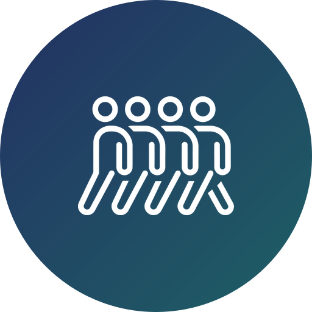
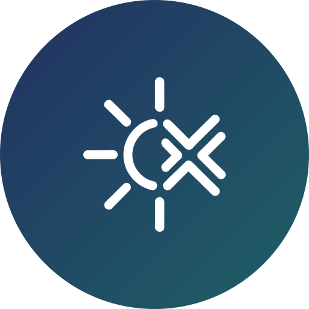
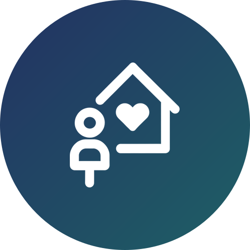

Mission Impact Teams (MITs) visit the unreached nations to minister in many ways, including kids’ ministry, women’s ministry, men’s ministry, art, worship and intercessory prayer. We go together to serve the nations in unity, and this team doesn’t require Vision School graduates.
Kids’, women’s and men’s ministry, art, worship and intercessory prayer.

We go together to serve the nations in unity, as one team.
This specific team doesn’t require Vision School graduates.

Campus and kids teams go during the summer and winter breaks, to regions where unreached peoples live.
Students serve through peace volunteering and academic and cultural exchange.

After Kids Vision School, children go for evangelization, English camps and homestays.